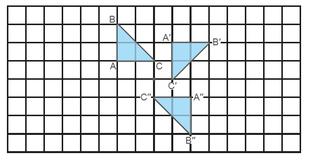
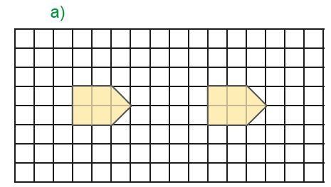
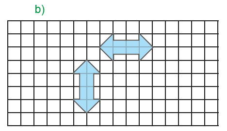
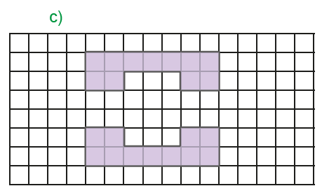
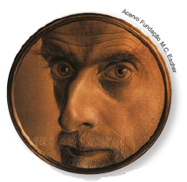

120
UNIDADE 4 - CAPÍTULO 4
Capítulo 4 - Transformações geométricas
Dadas algumas figuras, podemos fazer determinados movimentos ou transformações com elas, no plano, de tal maneira que sua forma e o seu tamanho sejam preservados. Observe:
Simetria por reflexão: dado um eixo de simetria, podemos refletir uma figura dada, achando a figura simétrica a esta.
Eixo de simetria
![Ilustração de uma malha quadriculada com 8 linhas e 16 colunas, formada por quadradinhos de mesmo tamanho. Uma linha vermelha, na vertical, demarca o eixo de simetria da malha, separando em 2 quadrantes de 8 colunas. No quadrante esquerdo, alguns quadradinhos pintados de verde, uns inteiros, outros pela metade, formam uma seta apontada para esquerda. A seta está centralizada no quadrante, e seus vértices estão identificadas pelas letras: A, B, C, D, E, F, G, H. O mesmo acontece no quadrante direito, como em um reflexo, com a seta apontada para direita.](../../resources/images/unidade4/50.PNG)
Simetria por rotação: é uma transformação geométrica na qual giramos uma figura dada em torno de um ponto fixo, seguindo um sentido e um ângulo.
Simetria por translação: é uma transformação geométrica na qual deslocamos ou transladamos a figura dada, de modo que a figura deslocada seja congruente à original. Nesse caso, todos os pontos da figura são deslocados paralelamente e à mesma distância.
121
UNIDADE 4 - CAPÍTULO 4
![Ilustração de uma malha quadriculada com 8 linhas e 16 colunas, formada por quadradinhos de mesmo tamanho. No centro da malha, três losangos verticais laranjas de tamanhos iguais dispostos lado a lado. Todos iniciam na terceira linha com o intervalo de duas colunas entre eles. Os vértices de cada um foram identificados pelas letras: A, B, C, D e Ilustração de uma malha quadriculada com 8 linhas e 16 colunas, formada por quadradinhos de mesmo tamanho. No centro da malha, duas figuras amarelas, que lembram flechas com a ponta para a esquerda. Elas têm o mesmo tamanho e estão dispostas uma embaixo da outra. Os vértices de cada uma foram identificados pelas letras: A, B, C, D, E.](../../resources/images/unidade4/52.PNG)
ENCONTRE SOLUÇÕES
1. Nas malhas a seguir, foram construídos polígonos semelhantes em cada uma das situações. Identifique o caso de simetria utilizado em cada um deles.
  2. Maurits Cornelis Escher nasceu em 17 de junho de 1898, na Holanda. É um dos artistas gráficos mais famosos do mundo. Durante a sua vida fez diversas litografias, xilogravuras, gravuras em madeira e mais de 2 000 desenhos e esboços. Observe a seguir, algumas obras de Escher e identifique qual transformação geométrica ele utilizou em cada uma delas.
122
UNIDADE 4 - CAPÍTULO 4
![Xilogravura de Escher intitulada: “Caminho da Vida II” apresenta raias estilizadas brancas e cinzentas, ocupando todo o espaço de um quadrado. As raias têm cabeça larga e cauda estreita comprida. Os olhos têm formato de gota, com grandes cílios pretos. Uma linha preta contínua sai da ponta da cabeça até a ponta da cauda de cada raia. Quatro raias, de cabeça cinza e cauda branca, formam um quadrado, com a cabeça de uma próxima à cauda da outra. Dentro deste quadrado, outras oito raias, brancas e cinzas, intercaladas, nadam como se estivessem em fila, com a cabeça de uma próxima à cauda da outra. Esse movimento forma uma cruz de pontas curtas e arredondadas. Seguindo essa composição, à medida que se aproximam do centro, as raias vão ficando menores, até se tornarem minúsculas. Assim, parte do grande para o infinitamente pequeno e do infinitamente pequeno para o grande, numa espiral sem fim. Legenda da imagem: Escher, Maurits Cornelis. Caminho da Vida II. 1958. Xilogravura. 36,4 x 36,7. Coleção Cornelius Van S. Roosevelt National Gallery of Art, Washington, DC, EUA.](../../resources/images/unidade4/57.PNG)
![Xilogravura de Escher intitulada “Circle limit I” com peixes pretos e brancos, estilizados, ocupando todo o espaço de um círculo. Os peixes são formados por figuras geométricas, a cauda e a cabeça são losangos, os olhos são círculos e as duas nadadeiras são paralelogramos. Eles estão intercalados por cores, brancos e pretos. A partir do centro há três peixes pretos unidos pelos vértices das cabeças, intercalados por três peixes brancos unidos pelos vértices das caudas. Seguindo essa composição, à medida que se afastam do centro, os peixes vão ficando menores até se tornarem minúsculos no limite do círculo, dando a ilusão de uma esfera. Legenda da imagem: Escher, Maurits Cornelis. Circle limit I. 1958. Xilogravura. 42 cm. Coleção Cornelius Van S. Roosevelt, National Gallery of Art. Washington, D.C., EUA.](../../resources/images/unidade4/58.PNG)
3. Rubem Valentim nasceu em Salvador no ano de 1922, foi um escultor, pintor e professor. O artista realizou uma escultura de concreto aparente, instalada na Praça da Sé, em São Paulo, definindo- a como o Marco Sincrético da Cultura Afro-brasileira. Troque ideias com um colega e descrevam a obra em seu caderno. Ela apresenta algum tipo de simetria? Qual?
![Fotografia do Marco Sincrético da Cultura Afro-brasileira, de Rubem Valentim. Localizada na Praça da Sé, em São Paulo, é uma escultura de concreto formada basicamente de figuras geométricas como triângulos e retângulos com finalizações retas e curvas. No topo da escultura, a imagem de um homem em pé com os braços erguidos. Na continuação das pernas está a região central da escultura em que os lados direito e esquerdo são simétricos. Na base, a letra C duas vezes. No lado esquerdo, a letra está invertida. Do lado direito, a letra como ela é.](../../resources/images/unidade4/59.PNG)
4. (ENEM) Um programa de edição de imagens possibilita transformar figuras em outras mais complexas. Deseja-se construir uma nova figura a partir da original. A nova figura deve apresentar simetria em relação ao ponto O.
A imagem que representa a nova figura é:
a)

b)
![Em um retângulo na horizontal o ponto O está no centro e na base. Ele divide o retângulo ao meio com uma linha vertical, formando quatro retângulos horizontais. O primeiro retângulo localizado à esquerda e acima está dividido ao meio em diagonal com o lado preto na parte debaixo e à esquerda e o lado cinza na parte de cima, à direita. O segundo retângulo é branco e está localizado à esquerda e abaixo. O terceiro retângulo também é branco e está localizado à direita e acima. O quarto retângulo localizado abaixo à direita. Ele está dividido ao meio na diagonal com o lado cinza abaixo à esquerda e preto à direita acima.](../../resources/images/unidade4/61.PNG)
c)
![Em um retângulo na horizontal o ponto O está no centro e na base. Ele divide o retângulo ao meio com uma linha vertical, formando quatro retângulos horizontais. O primeiro retângulo localizado à esquerda e acima, está dividido ao meio em diagonal com o lado preto na parte debaixo à esquerda e o lado cinza na parte de cima, à direita. O segundo retângulo é branco e está localizado à esquerda abaixo. O terceiro retângulo à direita acima está dividido ao meio na diagonal com o lado cinza à esquerda acima e o lado preto à direita abaixo. O quarto retângulo é branco e está à direita abaixo.](../../resources/images/unidade4/62.PNG)
d)
![Dois quadrados um em cima e outro embaixo dispostos em diagonal ligados pelo ponto O. O quadrado de cima à esquerda está dividido ao meio na horizontal, formando dois retângulos. O retângulo de cima está dividido ao meio em diagonal com o lado preto na parte debaixo à esquerda e cinza na parte de cima à direita. O retângulo de baixo é branco. O segundo quadrado, localizado abaixo e à direita também está dividido ao meio na horizontal, formando dois retângulos. O retângulo de cima é branco e o retângulo debaixo está dividido ao meio em diagonal com o lado preto na parte cima à esquerda e cinza na parte debaixo à direita.](../../resources/images/unidade4/63.PNG)
e)
![Dois quadrados um em cima e outro embaixo dispostos em diagonal ligados pelo ponto O. O quadrado de cima à esquerda está dividido ao meio na horizontal, formando dois retângulos. O primeiro é o retângulo de cima, ele está dividido ao meio em diagonal com o lado preto na parte debaixo à esquerda e cinza na parte de cima à direita. O segundo retângulo localizado na parte de baixo é branco. O segundo quadrado abaixo e à direita também está dividido ao meio na horizontal, formando dois retângulos. O retângulo de cima é branco e o retângulo debaixo está dividido ao meio em diagonal com o lado cinza na parte debaixo à esquerda e preto na parte de cima à direita.](../../resources/images/unidade4/64.PNG)
123
UNIDADE 4 - CAPÍTULO 4
5. (OBMEP) A figura ao lado mostra a superfície pintada de um azulejo em forma de losango. Dos cinco padrões abaixo, apenas um não pode ser montado com cópias desse azulejo. Qual é esse padrão?

6. (OBMEP) Qual figura será obtida se girarmos no sentido horário o pentágono regular por um ângulo de 252o em torno do seu centro?
Observação: o sentido horário é o sentido em que giram os ponteiros de um relógio; no caso do pentágono, isso está indicado pela seta no desenho.